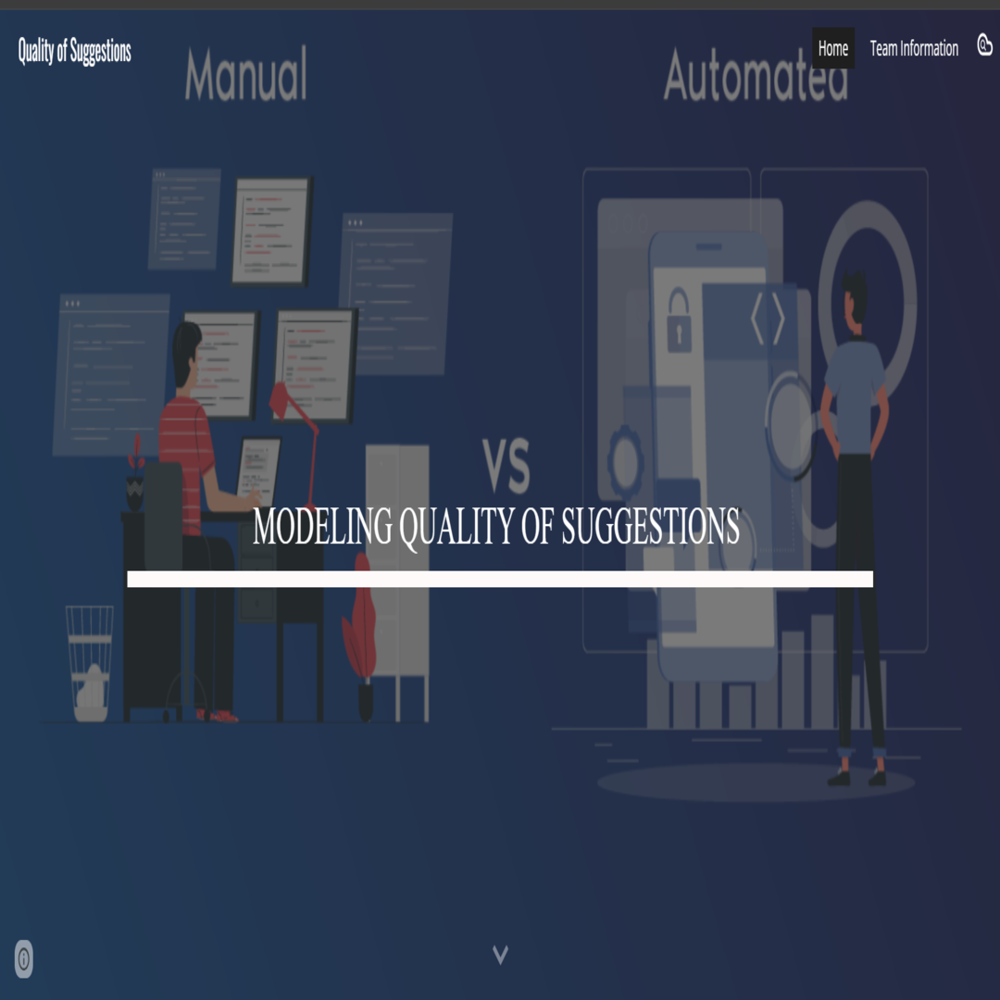
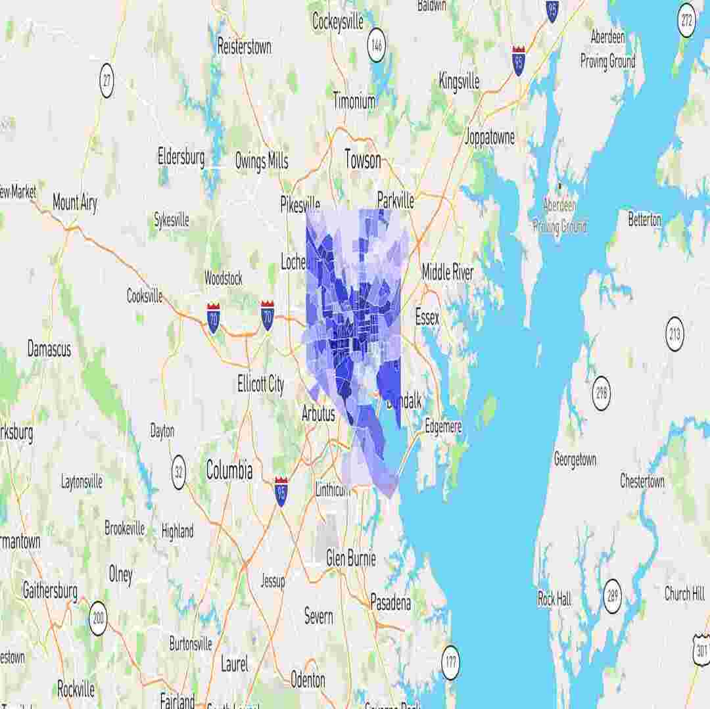
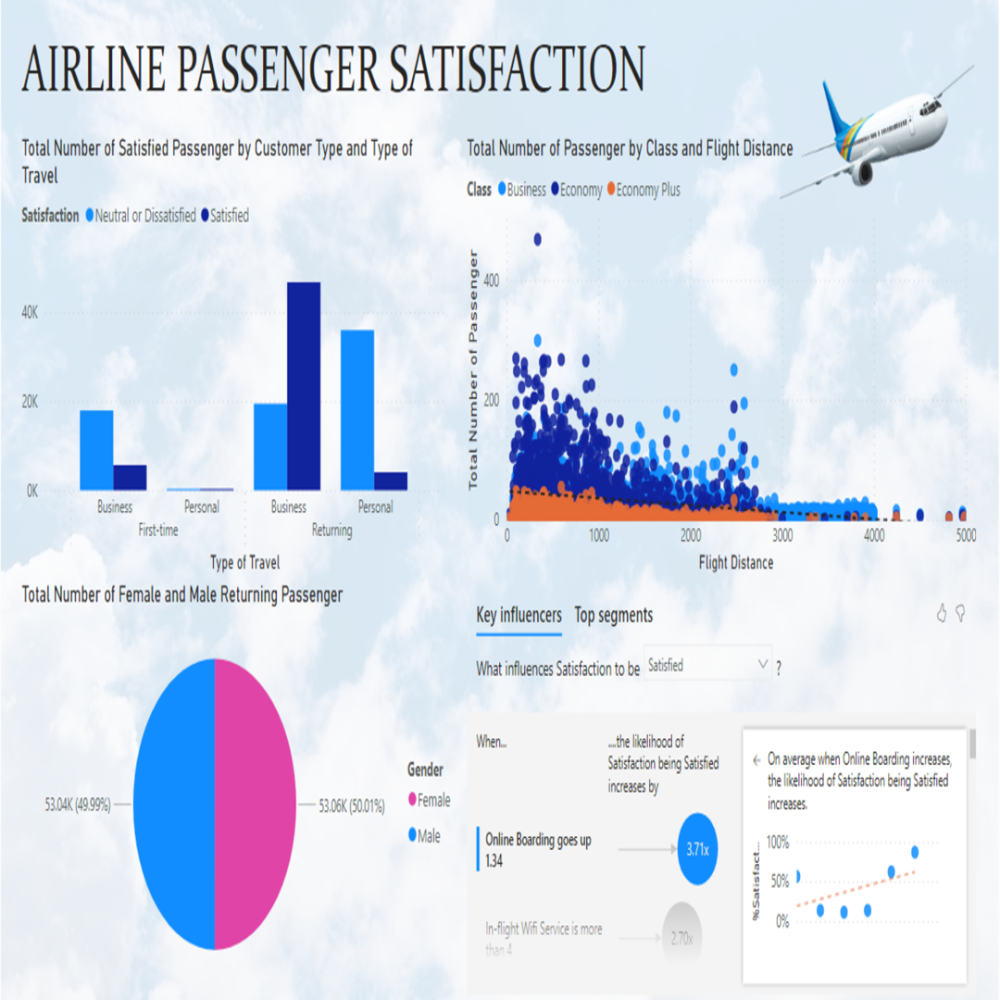
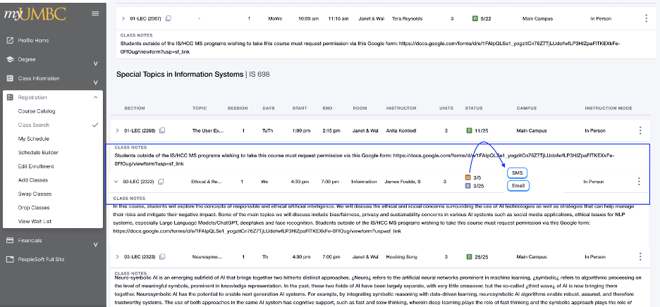

Quanta Computer Inc. 廣達電腦
Automated server and cloud infrastructure validation workflows in Python and Bash across high-volume production lines. Read More
Hello, I'm
Software Test Engineer
Results-driven Software Test Engineer with expertise in automating complex workflows, hardware/software integration, and production testing in high-volume enterprise environments. Skilled in Python, Bash, Ansible, Docker, Selenium, CI/CD pipelines, and Linux system validation. Experienced in building real-time monitoring platforms, dynamic dashboards, and automated hardware diagnostics to optimize system reliability and production efficiency.


Get to know more

4+ years
Software Engineer
Quanta Computer Inc. 廣達電腦

United States
MS in Information Systems from UMBC
GPA: 3.7/4.0
India
B.Tech in EEE from GCET
GPA: 3.67/4.0
I am an automation and test engineer with a strong background in Information Systems, test automation frameworks, and hardware/software validation. Passionate about solving complex production challenges, I specialize in streamlining deployment workflows, microservices validation, and diagnostic tool development. Experienced across Python, Linux, Ansible, Docker, Selenium, and full-stack monitoring applications.
My Skills Are: Python, Bash, Ansible, Docker, NGINX, Selenium, TestNG, Jenkins, SQL, Linux, React, Node.js
Explore My
Automated server and cloud infrastructure validation workflows in Python and Bash across high-volume production lines. Read More
Automated functional, API, and regression test suites across cloud-based and enterprise platforms using Selenium, JUnit/TestNG, and Cucumber. Read More
Engineered end-to-end regression automation using Selenium WebDriver, TestNG, and Maven for enterprise and fintech platforms. Read More
Developed and maintained Selenium test automation scripts across client applications, minimizing manual test overhead. Read More
Browse my Recent Work




Let's Get in Touch